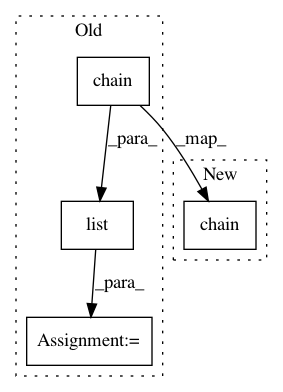

7446d43f2350302a1fb44278378e9072b29aaa80,mlxtend/feature_selection/exhaustive_feature_selector.py,ExhaustiveFeatureSelector,fit,#ExhaustiveFeatureSelector#,128
Before Change
if self.max_features < self.min_features:
raise AttributeError("min_features must be <= max_features")
candidates = list(chain(*((combinations(range(X.shape[1]), r=i))
for i in range(self.min_features,
self.max_features + 1))))
self.subsets_ = {}
all_comb = len(candidates)
n_jobs = min(self.n_jobs, all_comb)
parallel = Parallel(n_jobs=n_jobs, pre_dispatch=self.pre_dispatch)
work = enumerate(parallel(delayed(_calc_score)(self, X, y, c)
for c in candidates))
After Change
if self.max_features < self.min_features:
raise AttributeError("min_features must be <= max_features")
candidates = chain(*((combinations(range(X.shape[1]), r=i))
for i in range(self.min_features,
self.max_features + 1)))
self.subsets_ = {}
def ncr(n, r):
In pattern: SUPERPATTERN
Frequency: 3
Non-data size: 4
Instances
Project Name: rasbt/mlxtend
Commit Name: 7446d43f2350302a1fb44278378e9072b29aaa80
Time: 2017-09-07
Author: adam-erickson@users.noreply.github.com
File Name: mlxtend/feature_selection/exhaustive_feature_selector.py
Class Name: ExhaustiveFeatureSelector
Method Name: fit
Project Name: explosion/thinc
Commit Name: a6579e05569592916ad51f938db5056bc6bda817
Time: 2020-01-22
Author: tiangolo@gmail.com
File Name: thinc/mypy.py
Class Name:
Method Name: get_reducers_type
Project Name: lingpy/lingpy
Commit Name: d6691676e03553ccf7a6cfc175d49ebb2006e84f
Time: 2018-06-20
Author: tresoldi@shh.mpg.de
File Name: lingpy/sequence/ngrams.py
Class Name:
Method Name: skip_ngrams